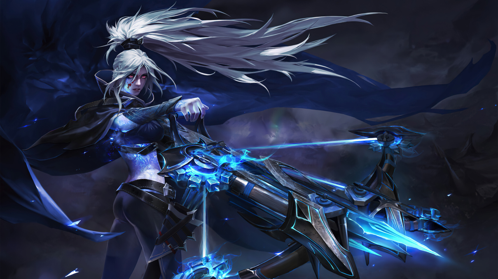

History
Drow Ranger's given name is Traxex--a name well suited to the short, trollish, rather repulsive Drow people. But Traxex herself is not a Drow. Her parents were travelers in a caravan set upon by bandits, whose noisy slaughter of innocents roused the ire of the quiet Drow people.
After the battle settled, the Drow discovered a small girl-child hiding in the ruined wagons, and agreed she could not be abandoned. Even as child, Traxex showed herself naturally adept at the arts they prized: Stealth, silence, subtlety. In spirit, if not in physique, she might have been a Drow changeling, returned to her proper home. But as she grew, she towered above her family and came to think of herself as ugly. After all, her features were smooth and symmetrical, entirely devoid of warts and coarse whiskers.
Estranged from her adopted tribe, she withdrew to live alone in the woods. Lost travelers who find their way from the forest sometimes speak of an impossibly beautiful Ranger who peered at them from deep among the trees, then vanished like a dream before they could approach. Lithe and stealthy, icy hot, she moves like mist in silence. That whispering you hear is her frozen arrows finding an enemy's heart.